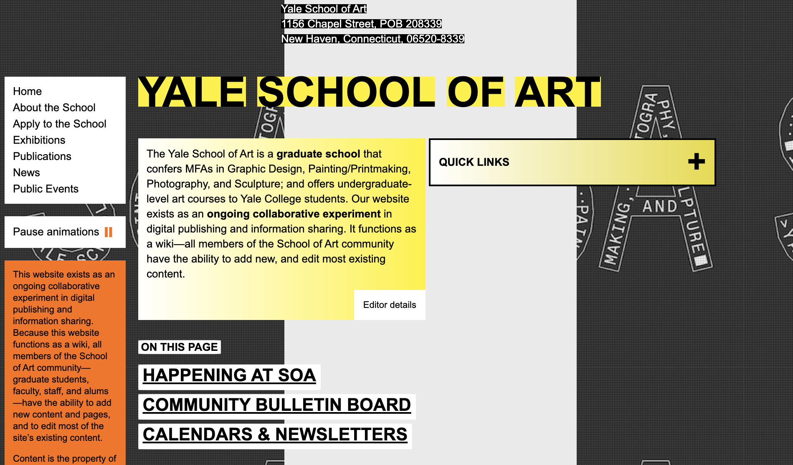

Yale School of Art Responsive Redesign
Project Overview
This project was for CSCI1300: User Interface and User Interaction focusing on redesigning a simple website. Our task was to analyze and identify flaws in an existing interface, create low-fidelity and high-fidelity prototypes for various screen sizes, and build a responsive website based on those prototypes. I choose to redesign Yale School of Art's website.
Part 1: Identifying Usability Problems
I chose this website because I was surprised that the Yale School of Art would have such a terrible design. I think they are doing it ironically, but I thought it would be interesting to analyze why I think that this design is bad and find ways to improve it.
UI/UX Criteria Topics
Problems in Original Website
Solutions in Redesign
Usability
Conflicting background colors with font causes eye strain.
No indication of what are the quick links are so it is hard to know what they are.
No padding within the text block making it very hard to read.
Changed background color and font colors to make it more aesthically pleasing.
Have an intuitive three-line nav bar that is popular and intuitive for users to click on for links.
Added padding within text blocks.
Learnability
Hard to navigate the page because the website is very disorganized and not intuitive.
Learning that the Quick Links is a drop down is very untuitive.
Very hard to learn that the Community Billboard allows students to post their latest work since there is only one artwork currently posted.
Have explicit changes in appearances to indicate different sections. For example change in background color.
Have a 3-line navigation bar that is intuitive for users to click on the top left.
Have several students' past works on display to indicate that the user can post their work too.
Memorability
Hard to remember what all the links are in quick links, so have to check whether it is further down the current page, on the left navigation, or in the quick links drop-down.
Have a navigation links on the top and the bottom of the page
In addition to analyzing the website on the three usability guidelines, I also used WebAIM Wave to detect possible accessibility problems. However, it said that there are no errors in the website, which I am very surprised about. I thought it would have a lot of accessibility problems due to the bad color choices and the navigational problems. However, according to the WebAIM WAVE, it doesn’t detect any possible accessibility problems.
Part 2: Visual Redesign
Low Fidelity Wireframing
For this section, I created a low fidelity wireframe that gives a layout on how I would want to redesign the website to solve many of the current issues. (Feel free to navigate in the embedded wireframes)
Visual Design Guide
For this section, I decided on the colors, typography, and images I would want for the High Fidelity Wireframe.
High Fidelity Wireframing
Based on the same layout from the low fidelity wireframe and the visual design guide, I then created a more detailed layout with the specific colors, typography, and images that I would want in my HTML/CSS website. (Feel free to navigate in the embedded wireframes)
Part 3: Responsive Redesign
For this section, I used the Hi-Fi Wireframing as a layout for the website that I made in HTML and CSS. Below is the screenshots of the website and the link to the website can be found here.


Key Takeaways
From this project, I learned how to identify flaws within a current website, identify its core problems, and ideate its potential solutions. From these proposed solutions, I was able to create low-fidelity and high-fidelity prototypes for various device dimensions. I was also able to create a responsive redesign of a website using HTML and CSS.